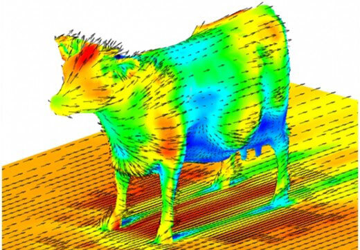

La Aerodinámica de una vaca
Las vacas vuelan?
no, las vacas no vuelan, pero si tienen aerodinámica

asies, las vacas son buenas en la aerodinámica
no, las vacas no vuelan, pero si tienen aerodinámica
asies, las vacas son buenas en la aerodinámica